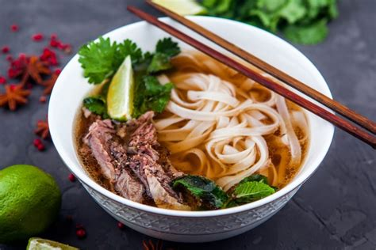

Pho

Description
This recipe will result in a tasty Vietnamese dish known as Pho.
The food comprises of rice noodles within a meat broth alongside the meat itself,
with herbs added afterwards before being served.
The recipients have the choice of adding sriracha sauce to liven up the flavour.
Remember to set some time to cook the food, because it will take awhile.
Once you are done, however, everyone will be sure to enjoy your food!
Ingredients
- 1 & 1/4 cups water
- 3 pounds chicken bones
- 1 whole chicken
- 1 medium onion
- 1 (1 inch) piece ginger
- 1 (32 fluid ounce) container
- 1/4 cup rock sugar
- 1 tablespoon fish sauce
- 2 cubes pho ga soup seasoning
- 1/2 tablespoon salt
- 2 (16 ounces) packages rice stick noodles (banh pho)
- 1/2 pound bean sprouts
- 1 bunch green onion, chopped
- 1 bunch cilantro (a.k.a. coriander), chopped
- 6 sprigs Thai basil, or as needed
- 1 lime, cut in wedges
Steps
-
Bring water to a boil in a stockpot.
Meanwhile, rinse chicken bones under hot water to get rid of impurities.
-
Place bones in the pot of boiling water.
Reduce heat and simmer until starting to soften,
skimming any fat off the surface of the broth, about 60 minutes.
Discard parboiled bones.
-
Place whole chicken into the pot and simmer until no longer pink in the center, 30 to 40 minutes.
Remove chicken from broth and set aside to cool.
An instant-read thermometer inserted near the bone should read 165 degrees F (74 degrees C).
-
Combine onion and ginger in a skillet over medium-high heat.
Cook and stir until nicely browned and fragrant, about 7 minutes.
Smash ginger with the backside of a knife onto a cutting board.
Place onion and ginger into the broth.
Add chicken broth, rock sugar, fish sauce, pho ga seasoning, and salt.
-
Bring a large pot of water to a boil.
Add rice noodles and boil until tender yet firm to the bite, 2 to 3 minutes.
Drain.
-
Peel skin off of the cooled chicken; discard skin and bones, reserving the meat.
-
Serve noodles in bowls topped with chicken meat and broth.
Garnish with bean sprouts, green onion, cilantro, and Thai basil.
Squeeze a wedge of lime into each bowl.